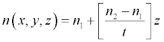
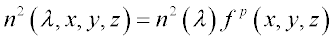
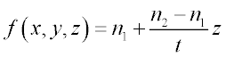

The example of Axial Gradient Index (GRIN) shows an axial GRIN singlet lens. This
lens was actually designed in ASAP but only its GRIN properties are examined. The gradient
function is simply a linear function of z coordinate in the singlet.

-
The GRIN function in ASAP is of the form:

-
The two functions can be equated by setting p=2 and

whereby this equation may be entered directly in the GENERAL command.
Tips
- In the definition of the GRIN, the base
index is included in the function. Therefore a 1 is used as the
refractive index on the MEDIA command. In other GRIN
examples, the base index is factored out of the equation leaving a constant term
of 1 in the GENERAL command. In this situation, the
base index is entered on the MEDIA command. In other words,
the GRIN function referenced by the MEDIA command is
automatically multiplied by the refractive index entered on the MEDIA command.
- The optical system starts at a z
coordinate of 5. Therefore, the GRIN function must be shifted into place to
correspond to the correct alignment of the GRIN with the optical system in
global coordinates.